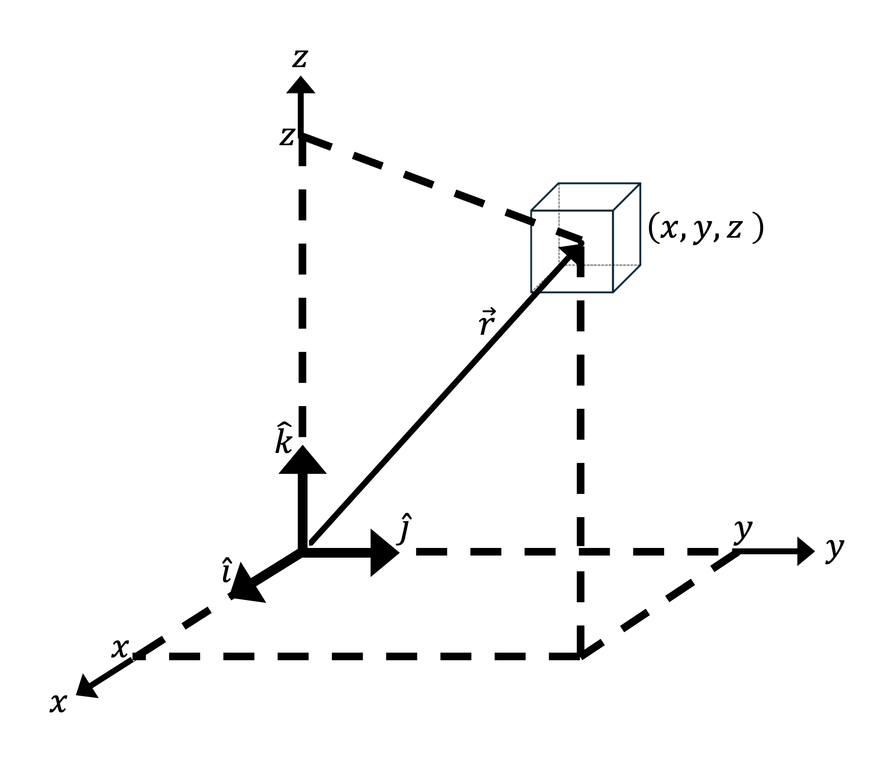

Section 2.1 Cartesian coordinate system
In Chapter 1, we used the Cartesian coordinate system (also called the rectangular coordinate system) to identify the locations of volume elements in three-dimensional space. The location of the center of any volume element is given by the ordered triple \((x, y, z)\text{,}\) where \(x\text{,}\) \(y\text{,}\) and \(z\) are its coordinates. These coordinates are signed distances from the origin measured parallel to the \(x\)-, \(y\)-, and \(z\)-axes, which are mutually orthogonal and oriented relative to each other following the right-hand rule. Additionally, the unit direction vectors \(\hat{i}\text{,}\) \(\hat{j}\text{,}\) and \(\hat{k}\) are parallel to the \(x\)-, \(y\)-, and \(z\)-axes, respectively, and point in their positive directions.
An arbitrary vector \(\vec{A}\) is written in Cartesian coordinates in component form
\begin{equation*}
\vec{A} = \langle A_x, A_y, A_z \rangle
\end{equation*}
or in unit vector form as
\begin{equation*}
\vec{A} = A_x \, \hat{i} + A_y \, \hat{j} + A_z \, \hat{k}\text{.}
\end{equation*}
In either case, \(A_x\text{,}\) \(A_y\text{,}\) and \(A_z\) are its \(x\text{,}\) \(y\text{,}\) and \(z\) components, respectively. Like coordinates, components are signed distances from the origin measured parallel to coordinate axes. When multiplied onto their corresponding unit direction vectors and summed, they result in the desired vector.
A position vector
\begin{equation*}
\vec{r} = x \, \hat{i} + y \, \hat{j} + z \, \hat{k}
\end{equation*}
is drawn in Cartesian 3-space with its tail fixed to the origin and its tip attached to a volume element of interest with coordinates \((x,y,z)\text{.}\)
-
If the volume element can move through space with time \(t\text{,}\) its position vector is\begin{equation*} \vec{r}(t) = x(t) \, \hat{i} + y(t) \, \hat{j} + z(t) \, \hat{k}\text{.} \end{equation*}
-
It follows that the volume element’s velocity is given by\begin{equation*} \vec{u}(t) = \frac{D\vec{r}}{Dt} = \frac{Dx}{Dt} \, \hat{i} + \frac{Dy}{Dt} \, \hat{j} + \frac{Dz}{Dt} \, \hat{k} = u(t) \, \hat{i} + v(t) \, \hat{j} + w(t) \, \hat{k}\text{,} \end{equation*}where \(u\text{,}\) \(v\text{,}\) and \(w\) are the velocity components in the \(x\text{,}\) \(y\text{,}\) and \(z\) directions, respectively.
-
It further follows that the volume element’s acceleration is given by\begin{equation*} \vec{a}(t) = \frac{D\vec{u}}{Dt} = \frac{Du}{Dt} \, \hat{i} + \frac{Dv}{Dt} \, \hat{j} + \frac{Dw}{Dt} \, \hat{k}\text{.} \end{equation*}
An example of a volume element with coordinates \((x, y, z)\) and position vector \(\vec{r}\) is shown in Figure 2.1.1 below.
